Free Bet Deportiva
Apuesta $10.000 CLP en deportes con cuota mínima 1.80 y recibe $30.000 en apuesta gratis, sin necesidad de ganar.
Código: OMW7
Ver detalles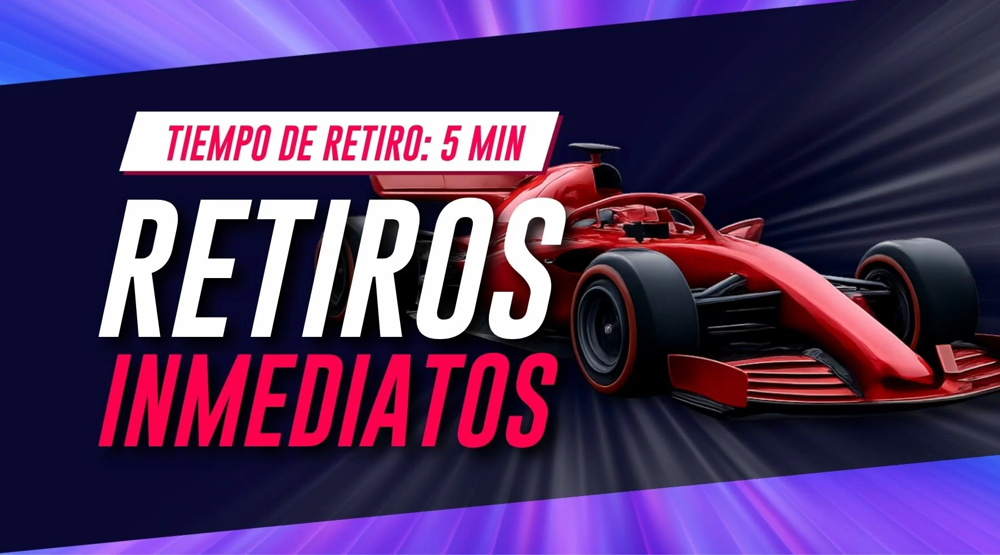
Si eres nuevo en Betsala Deportes, ¡tienes una Free Bet de $30.000 pesos esperándote!
¿Cómo conseguir tu Bono de Bienvenida para Deportes?
Contáctanos a través del Chat o en soporte@betsala.com con el código promocional OMW7 si tienes cualquier duda.
Términos y Condiciones Bono de Bienvenida Deportes.
Código: OMW7
Reclamar bono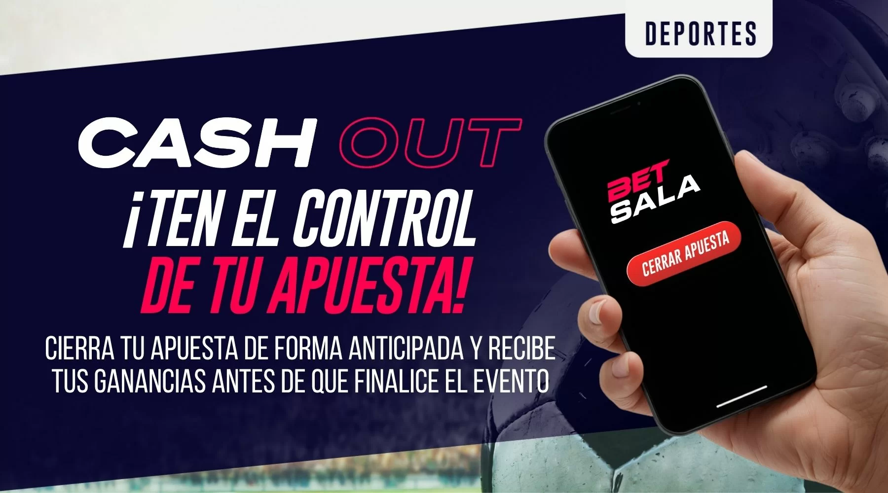
Te damos la bienvenida al Casino Betsala con un bono del 150% hasta $300.000 CLP en tu primer depósito, más hasta 200 Giros Gratis para usar en las tragamonedas de Pragmatic Play.
¿Cómo consigo mi pack de bienvenida?
¿Cuándo recibo mis Giros Gratis?
Comenzarás a recibir tus Giros Gratis después de reclamar el Bono de primer depósito y realizar tu depósito de $5.000 CLP o más. Recuerda activar los Giros en la sección bonos -> giros gratis de tu cuenta para poder usarlos.
Contáctanos a través del Chat o en soporte@betsala.com con el código promocional CASINO1DEP si tienes cualquier duda.
Términos y condiciones del bono de "150% de tu primer depósito + hasta 200 Giros":
Código: CASINO1DEP
Reclamar bono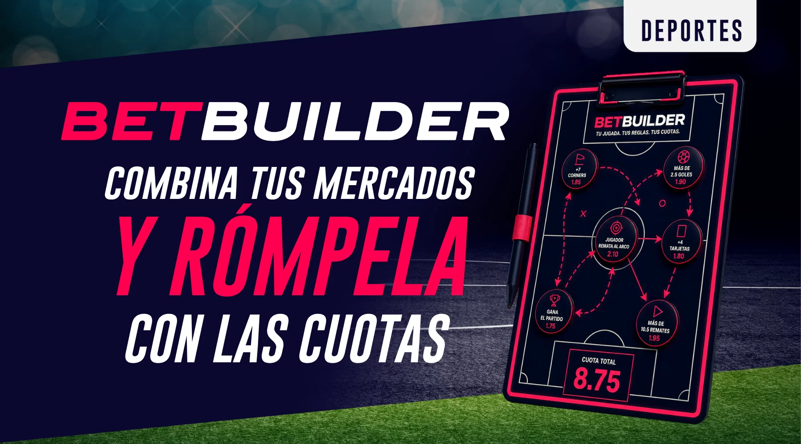
En la Copa del Mundo se ven los mejores. Y en Betsala la apuesta será mucho mayor con las Misiones Mundialistas: cada día tendrás un desafío, que te permitirá ganar premios y sumar sellos a tu Pasaporte Mundialista. Júntalos y conseguirás recompensas de 5, 10 y 20 mil pesos en Free Bets, a medida de que avances.
Completa las misiones de Betsala y suma bonos para que vivas el Mundial 2026 desde primera fila, en la Sala de los Campeones.
¿Cómo funciona la promoción?
Cumple misiones y gana premios extra
| Requisito | Premio extra (CLP) |
|---|---|
| Completa las primeras 5 misiones | Free Bet de $5.000 |
| Completa las primeras 10 misiones | Free Bet de $10.000 |
| Completa las 17 misiones | Free Bet de $20.000 |
Si tienes consultas, puedes contactarnos a través del Chat o en soporte@betsala.com, con el código promocional UNT2.
Términos y condiciones
Pasaporte Mundialista
Código: UNT2
Reclamar bono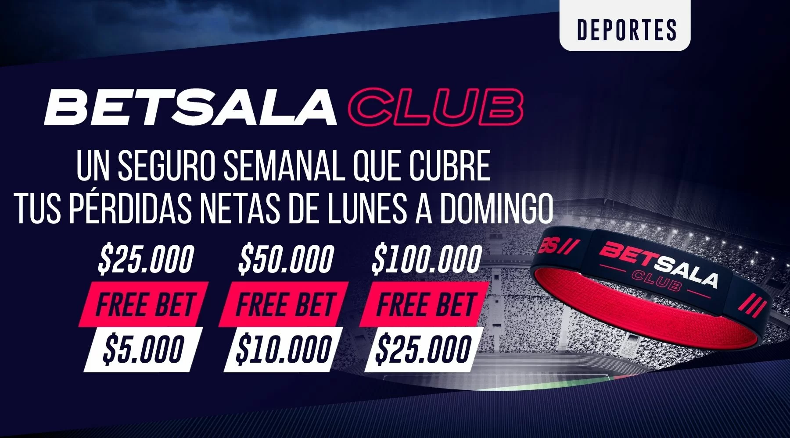
El Mundial también llegó a las tragamonedas de Casino Betsala y con una promoción inigualable. Participa por un pozo de $2.250.000 CLP a repartir en el Prize Drop Mundialero, donde con un solo giro puedes ganar premios en DINERO REAL. Ingresa a la slot Big Bass Football Bonanza y con cada tirada desde $300 CLP tendrás la oportunidad de quedarte con uno de las 100 recompensas en efectivo. Porque cuando se unen el fútbol y tu pasión por las tragamonedas, el triunfo se disfruta el doble.
¿Cómo funciona la promoción?
Si tienes consultas, puedes contactarnos a través del Chat o en soporte@betsala.com, con el código promocional ZKM7.
Términos y condiciones
Código: ZKM7
Reclamar bono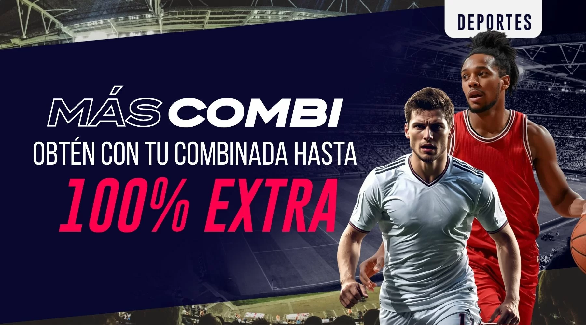
¡Oye pero qué maravilla! Mientras todos están pendiente del Mundial, Casino Betsala reparte un millón de pesos cada semana en premios en efectivo. Con el torneo Dos Millones en Dos Semanas, tienes que buscar el mayor multiplicador en tragamonedas seleccionadas para subir en el ranking. Si estás entre los 20 mejores, habrá una recompensa en DINERO REAL para ti.
Encuentra tu mejor actuación y llévate un gran premio y el honor de estar entre los mejores.
¿Cómo funciona la promoción?
Contáctanos a través del Chat o en soporte@betsala.com con el código promocional VLC8 para todas tus consultas.
Términos y Condiciones
Apuestas $200 y el juego paga $1.000 en ese giro → 1.000 ÷ 200 = 5x (5 puntos)
| Fecha | Jugada | Multiplicador | Puntos |
|---|---|---|---|
| 15/6 | Apuestas $200 y el juego paga $1.000 en ese giro → 1.000 ÷ 200 | 5x | 5 |
| 16/6 | Apuestas $200 y el juego paga $2.000 en ese giro → 2.000 ÷ 200 | 10x | 10 |
| 17/6 | Sin apuestas válidas | 0 | |
| 18/6 | Apuestas $200 y el juego paga $2.000 en ese giro → 2.000 ÷ 200 | 10x | 10 |
| 19/6 | Apuestas $200 y el juego paga $1.000 en ese giro → 1.000 ÷ 200 | 5x | 5 |
| 20/6 | Sin apuestas válidas | 0 | |
| 21/6 | Apuestas $200 y el juego paga $1.000 en ese giro → 1.000 ÷ 200 | 5x | 5 |
| Semana | Puntuación acumulada | 35 |
| Posición | Premio (CLP) | % |
|---|---|---|
| 1 | $400.000 | 40 |
| 2 | $200.000 | 20 |
| 3 | $100.000 | 10 |
| 4 | $60.000 | 6 |
| 5 | $40.000 | 4 |
| 6 a 10 | $20.000 | 2 |
| 11 a 20 | $10.000 | 1 |
Código: VLC8
Reclamar bono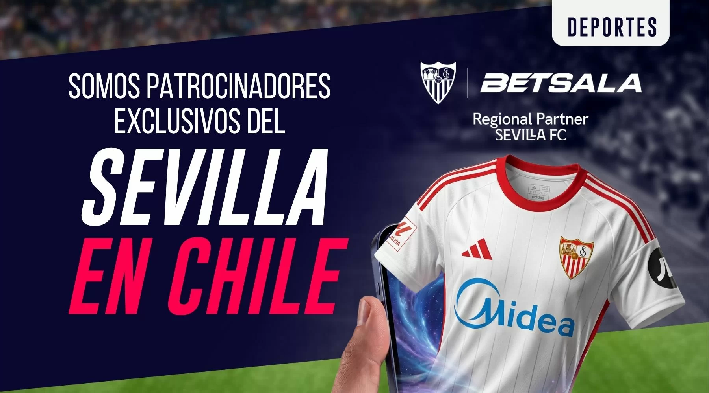
El Casino Betsala también premia tu segundo depósito con un bono del 100% hasta $200.000 CLP, más hasta 100 Giros Gratis para usar en las tragamonedas de Pragmatic Play.
¿Cómo consigo mi pack de segundo depósito?
¿Cuándo recibo mis Giros Gratis?
Comenzarás a recibir tus Giros Gratis después de reclamar el Bono de segundo depósito y realizar tu depósito de $15.000 CLP o más. Recuerda activar los Giros en la sección bonos -> giros gratis de tu cuenta para poder usarlos.
Contáctanos a través del Chat o en soporte@betsala.com con el código promocional CASINODEP2 si tienes cualquier duda.
Términos y condiciones del bono de "100% de tu segundo depósito + hasta 100 Giros"
Código: CASINODEP2
Reclamar bono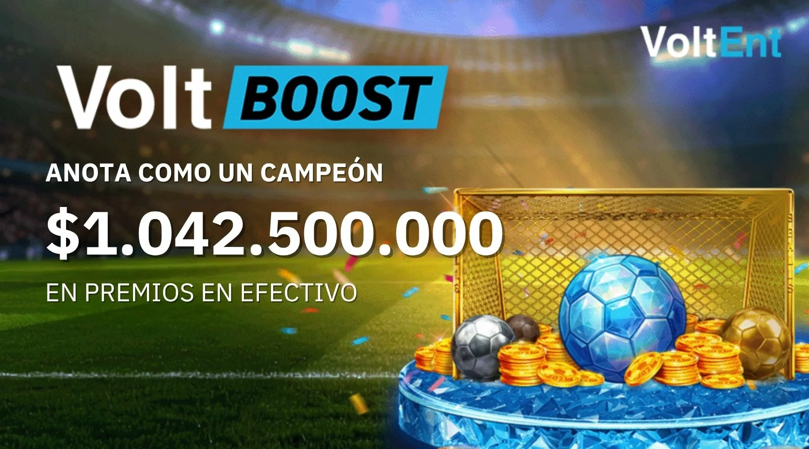
Cada lunes disfruta de tus tragamonedas favoritas de la saga Gates of Olympus de Pragmatic Play, con las que podrás ganar 25 giros gratis para seguir disfrutando de nuestro Casino. Sólo tienes que jugar $25.000 pesos o más en los juegos y... ¡Ganes o pierdas recibirás tu premio!
¿Cómo funciona la promoción?
Las tragamonedas seleccionadas son:
Contáctanos a través del Chat o en soporte@betsala.com con el código promocional WAGGO2026 si tienes cualquier duda.
Términos y Condiciones de la Promoción:
Código: WAGGO2026
Reclamar bono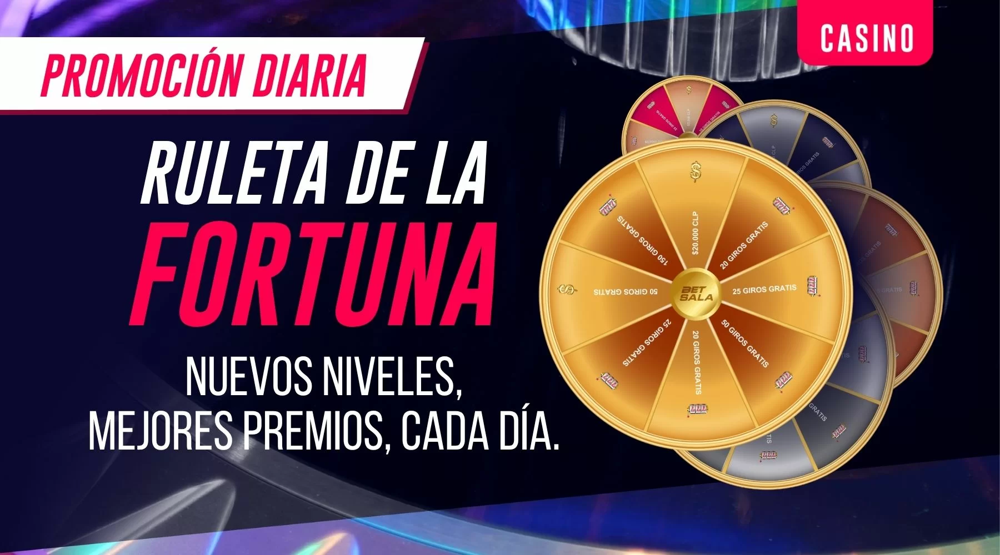
Ahora puedes demostrar cuánto sabes de fútbol haciendo tus pronósticos y participando por el pozo de $500.000 en freebets de cada fecha. Juégatela GRATIS y transfórmate en El Vidente de Betsala.
La segunda fecha del Vidente Mundialero ya está disponible. Requisito: haber realizado un depósito de $10.000 o más desde el 10 de junio de 2026.
Términos y Condiciones de “El Vidente”
El Vidente es un juego de pronósticos deportivos donde los jugadores predicen los resultados de los partidos de fútbol seleccionados, y ganan puntos según la precisión de sus predicciones.
Los torneos pueden estar compuestos por una o más rondas, y cada ronda puede incluir varios partidos seleccionados por el organizador.
Los torneos pueden ser:
Todas las predicciones se basan en el tiempo reglamentario del partido (90 minutos + tiempo agregado).
Los jugadores obtienen puntos por predecir correctamente en cada partido:
Las predicciones pueden realizarse o modificarse hasta 5 minutos antes del inicio del partido.
Los puntos se actualizan en tiempo real mientras el partido está en juego.
En cada ronda, el jugador puede seleccionar una predicción para aplicar la función x2, que duplica los puntos obtenidos si la predicción es correcta.
La selección puede cambiarse hasta 5 minutos antes del inicio del partido.
La cantidad de puntos otorgados se calcula de la siguiente forma:
Número máximo de puntos para el tipo de predicción seleccionado − (Número máximo de puntos para el tipo de predicción seleccionado × Número de predicciones correctas de los jugadores / Número total de predicciones de los jugadores × 0,9) = Puntos*
La cantidad de puntos otorgados depende del número de jugadores que hayan hecho la misma predicción.
Cada tipo de predicción tiene un máximo de puntos posible. Tipo de predicciones/Puntos máximos:
Ejemplo:
Supongamos que 1000 jugadores han predicho el resultado del partido Arsenal vs Barcelona. De todos los jugadores, 400 predijeron una victoria del Arsenal, 50 predijeron un empate y 550 predijeron una victoria del Barcelona. Supongamos que el tiempo reglamentario del partido termina con una victoria del Arsenal por 3:2.
En otras palabras, tenemos las siguientes variables de entrada:
Los puntos se calculan según la siguiente fórmula:
100 (Número máximo de puntos para el tipo de predicción Resultado) −
100 (Número máximo de puntos para el tipo de predicción Resultado) ×
400 (Número de predicciones correctas de los jugadores) /
1000 (Número total de predicciones de los jugadores) × 0,9 = 64 puntos
Por lo tanto, todos los jugadores que predijeron correctamente el resultado del partido reciben 64 puntos.
Los puntos de los jugadores se muestran en la tabla de clasificación que se actualiza periódicamente. Los puntos de la tabla de clasificación se suman en un plazo de 24 horas tras la finalización de todos los partidos del torneo: El resumen de los resultados finales se realiza en base a los datos proporcionados por la página web oficial del torneo en cuestión y no está sujeto a cambios. El cambio de los resultados resumidos sólo es posible en caso de que los resultados dados hayan sido publicados incorrectamente debido a problemas técnicos.
La distribución de premios se indica en la sección Premios dentro del juego. Los premios se entregan hasta 10 días después de finalizada la ronda o el torneo.
En torneos con pago de entrada, el pozo de premios se forma con las cuotas de los jugadores. El organizador puede cobrar una comisión del 10%.
En los torneos con premios en Free Bet, las condiciones de las Free Bets serán las siguientes:
Si dos o más jugadores obtienen la misma cantidad de puntos:
Los jugadores se ordenan en una tabla de clasificación según los puntos obtenidos.
Los resultados finales de cada ronda se calculan dentro de las 24 horas posteriores al último partido y se basan en fuentes oficiales de resultados deportivos.
Si un partido se posterga o cancela:
Si todos los partidos de un torneo con pago de entrada se cancelan, las cuotas de entrada serán reembolsadas íntegramente.
El juego estará disponible cuando sea habilitado por el organizador y puede estar sujeto a cambios o actualizaciones.
Al participar en el juego Predictor, el jugador acepta estos Términos y Condiciones, así como las reglas específicas de cada torneo o promoción.
Se aplicarán los términos y condiciones generales de Betsala.
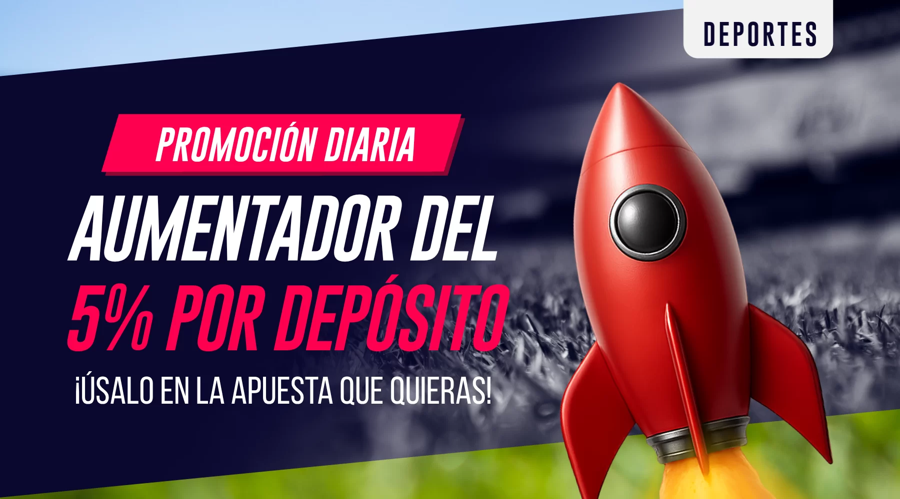
Demuestra cuánto sabes de fútbol con la Cartilla Futbolera de Betsala. Elige tus resultados, arma tus líneas y juega por pozos cada vez mayores.
¿Qué es?
La Cartilla Futbolera es un juego en el que los clientes deben predecir el resultado de una serie de eventos deportivos previamente definidos por Betsala.
Cada participación consiste en una combinación de pronósticos (línea), donde el cliente selecciona uno o más resultados posibles por evento: 1 (gana el equipo local), X (empate) o 2 (gana el equipo visitante) . El cliente puede realizar múltiples combinaciones (líneas), lo que incrementa sus probabilidades de acierto y el importe total apostado. El monto de las apuestas son 300CLP, 600CLP y 1200CLP.
Cuanto mayor es la cantidad apostada mayor será el pozo por el que se juega.
¿Cómo funciona?
Pozo de premios.
El pozo de premios se compone de un fondo determinado, alimentado por las participaciones de los usuarios, y podrá incrementarse en función del volumen total de participación. Los premios se distribuirán entre los participantes en función del número de aciertos obtenidos, considerando categorías de aciertos totales y hasta un máximo de tres errores permitidos. Cada categoría repartirá el premio entre los jugadores ganadores de forma proporcional a su participación. En caso de que ningún participante alcance el mínimo de aciertos requerido para una categoría, el pozo correspondiente podrá acumularse para la siguiente jornada de La Cartilla Futbolera.
Términos y Condiciones:
Betsala se reserva el derecho de modificar o cancelar esta promoción en cualquier momento.
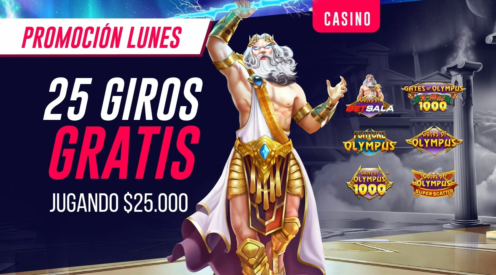
La Copa del Mundo también se vive en Casino Betsala, con una promoción que promete convertirse en un golazo. Se trata de World Cup Drops, que te permite ganar premios en DINERO REAL en más de veinte ruletas seleccionadas de Evolution, con un pozo a repartir de 500 millones de pesos. Solo debes jugar y de manera aleatoria podrás conseguir una recompensa equivalente al triple de tu última apuesta válida, que se acreditará directamente en tu cuenta. ¿Qué te parece? Dale la vuelta y busca los mejores premios con los World Cup Drops.
Cómo funciona la promoción
Si tienes consultas, puedes contactarnos a través del Chat o en soporte@betsala.com, con el código promocional HRE0.
Términos y condiciones
| Ice Fishing | MONOPOLY Big Baller | Greek Lightning Roulette |
|---|---|---|
| Crazy Time | Immersive Roulette | Hindi Lightning Roulette |
| Crazy Balls | MONOPOLY Live | Italian Lightning Roulette |
| Crazy Time A | Red Door Roulette | PD Lightning Roulette |
| Lightning Storm | Lightning Roulette | Turkish Lightning Roulette |
| Funky Time | Monopoly Roulette | XXXtreme Lightning Roulette |
| Football Studio | World Cup Roulette | Ruleta Relámpago en Vivo |
| Ruleta Puerta Roja En Vivo |
Código: HRE0
Reclamar bono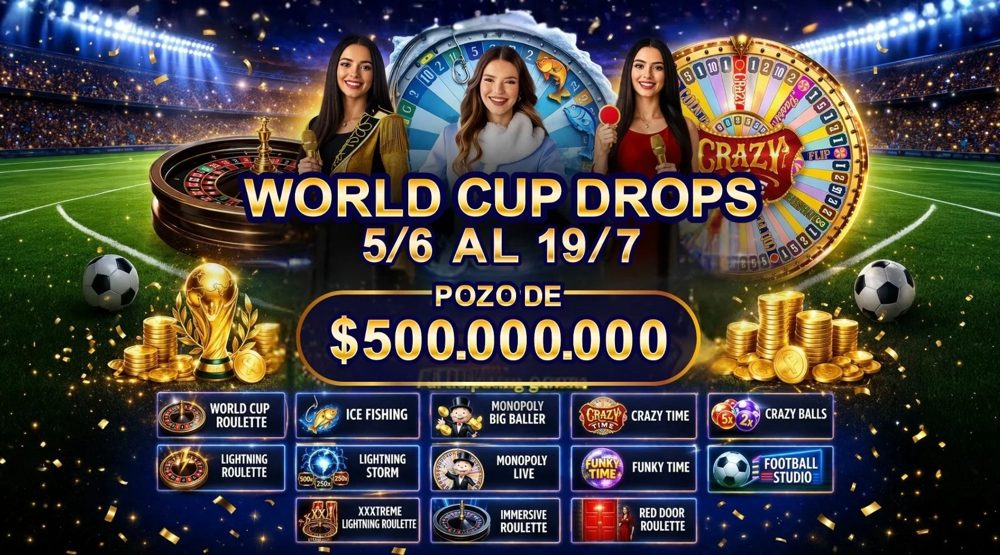
El Mundial se vive en todos los rincones del planeta y por supuesto, también en tus tragamonedas favoritas. Por eso, VoltEnt trae una promo mundialera que no podrás rechazar: cada giro en la slot 9 Balls puede activar el pozo promocional de 1.042,5 MILLONES DE PESOS a repartir en premios en DINERO REAL.
¿Cómo funciona la promoción?
Contáctanos a través del Chat o en soporte@betsala.com con el código promocional RXM5 para todas tus consultas.
Términos y Condiciones de la Promoción
Código: RXM5
Reclamar bono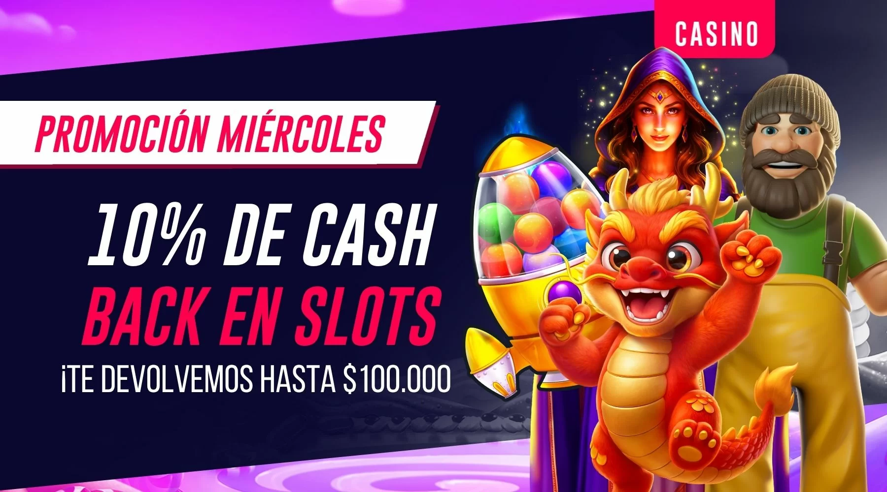
Cada miércoles cubrimos el 10% de tus pérdidas netas en Tragamonedas hasta $100.000 CLP, ¡en saldo real! ¿Te lo vas a perder?
¿En qué consiste la Oferta?
Contáctanos a través del Chat o en soporte@betsala.com con el código promocional CAS10%CASH2024 si tienes cualquier duda.
Términos y Condiciones de la Promoción
Código: CAS10%CASH2024
Reclamar bono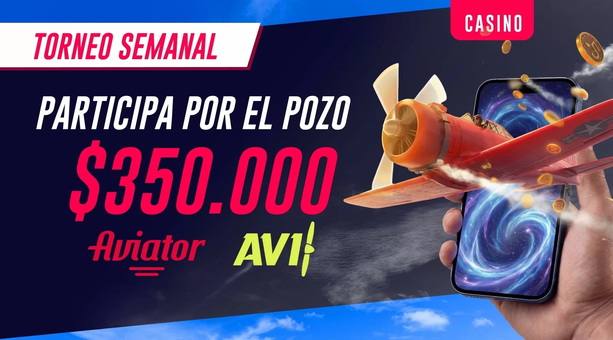
Disfruta del Casino En Vivo de Betsala con nuestro exclusivo Cashback del 5%, ¡cada día! Si, leíste bien, todos los dias cubrimos el 5% de tus pérdidas netas en el Casino En Vivo hasta $50.000 CLP, ¡en saldo real!
Pero eso no es todo. Además, tienes la opción de disponer de ese saldo cuando tu quieras o esperar a que te hagamos el reembolso cada 24h. ¡Tú decides!
¿En qué consiste la Oferta?
Contáctanos a través del Chat o en soporte@betsala.com con el código promocional CASHLIVE5% si tienes cualquier duda.
Términos y Condiciones de la Promoción
Código: CASHLIVE5%
Reclamar bono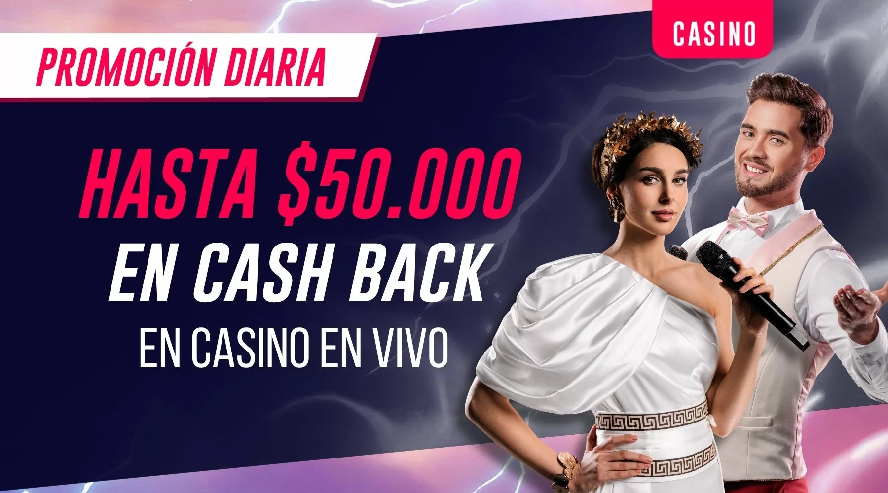
Desde el 13/11/23 te damos la bienvenida al Betsala Club, nuestra nueva promoción para recompensar a los jugadores de apuestas deportivas. Como ya sabes, no hay mejor forma de apostar que teniendo un seguro que cubra tus riesgos, y de eso trata nuestro Club. ¿No has acertado tus pronósticos? ¿Tu equipo favorito te ha fallado en el último partido? No te preocupes, cada lunes te acreditaremos una Free Bet para que compenses tu mala racha.
¿Cómo funciona la promoción?
Términos y condiciones:
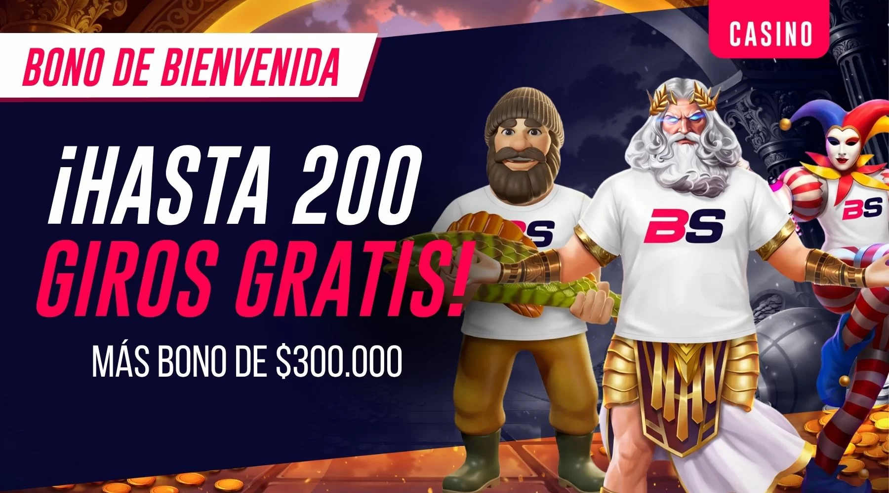
Drops & Wins de Pragmatic Play del 4 de Marzo 2026 al 3 de Marzo 2027.
De la mano de Pragmatic Play te presentamos Drops & Wins, una súper promoción con hasta 27.500.000.000 CLP en premios a repartir, con 100.000 premios semanales disponibles en Torneos Diarios y Wheel Drops Semanales.
¿Cómo funciona la promoción?
Participa automáticamente en:
¿Suena bien, verdad? Participar es muy sencillo: accede a cualquiera de las Slots seleccionadas con el logo Drop&Wins, haz la apuesta mínima y juega por tu premio.
Términos y Condiciones de la Promoción
Wheel Drops Semanales
Condiciones Wheel Drops
Torneos Diarios
Condiciones Torneos
Condiciones Generales
Términos adicionales
Se aplicarán los Términos y Condiciones Generales de Betsala.
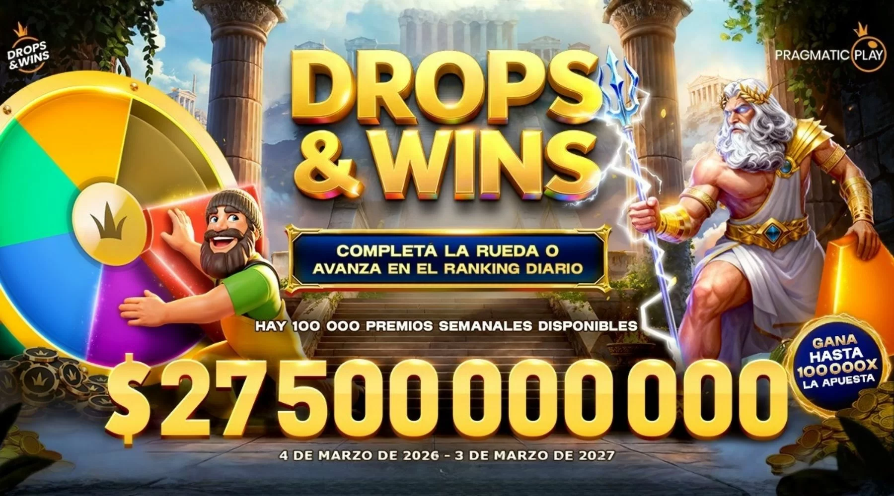
Torneo Semanal Aviator vs AV1 - $350.000 a repartir en efectivo.
Betsala te presenta un apasionante torneo Aviator vs AV1, en el que podrás llevarte tu parte de los $350.000 pesos en efectivo que repartimos entre los 3 primeros clasificados, ¡cada semana!
La apuesta mínima por tirada en cada juego es de $200 CLP, y cuánto mayor sea el multiplicador que obtengas en tu vuelo, ¡mejor será tu puesto en la clasificación!
Compite en el torneo cada semana, ¡y llévate tu premio!
Términos y condiciones generales
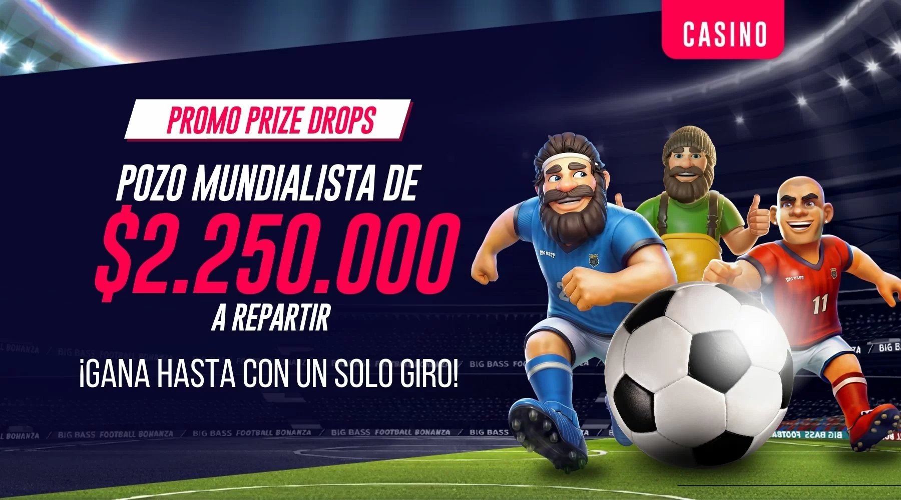
¡Nuestra Ruleta de la Fortuna llega renovada y potenciada! Cada jugada en tragamonedas cuenta aún más para darle un Giro a tu suerte. ¡Ahora con mejores premios! Realiza apuestas por un valor mínimo de $25.000 y empieza a conseguir tiradas. ¡Hay 5 niveles y puedes participar cada día! Llévate Giros Gratis, Bonos y premios en efectivo.
Términos y condiciones de la Ruleta de la Fortuna:
Términos y condiciones de los regalos de la Ruleta de la Fortuna:
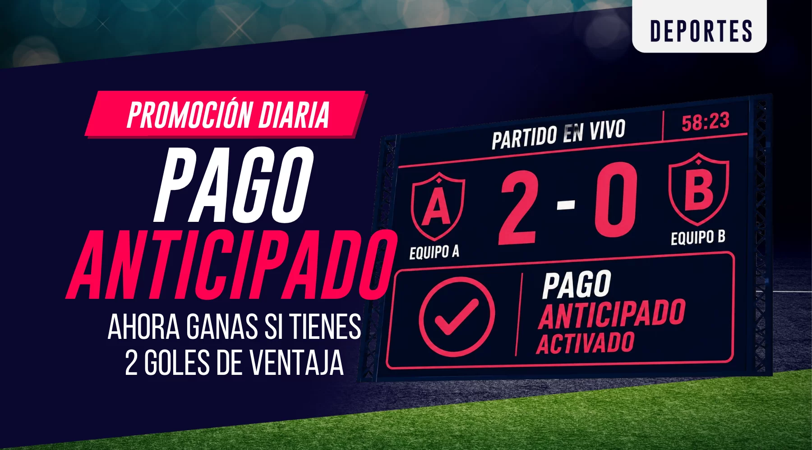
¿Eres fan de las apuestas combinadas? ¡Pues ya está aquí MásCombi! Una promoción que te bonifica hasta un 100% tus apuestas combinadas ganadoras. ¡En saldo real!
¿Cómo funciona la promoción?
Términos y Condiciones
11 .Las apuestas Bet Builder, las realizadas con Aumentador de ganancias, las realizadas con alguna Combinada del día, las realizadas con dinero de bono, Free Bet o que hayan sido cobradas mediante la función Cash-out no contarán para la promoción.
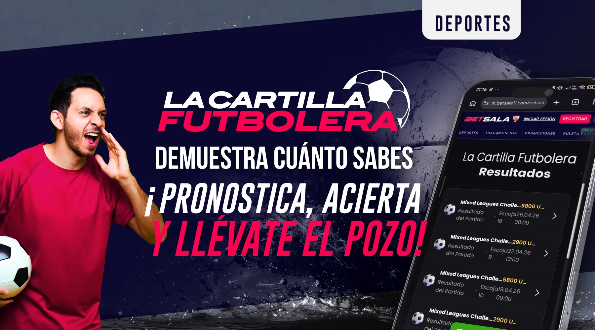
¿Eres fan de las apuestas combinadas? ¡Pues ya está aquí MásCombi! Una promoción que te bonifica hasta un 100% tus apuestas combinadas ganadoras. ¡En saldo real!
¿Cómo funciona la promoción?
Términos y Condiciones
11 .Las apuestas Bet Builder, las realizadas con Aumentador de ganancias, las realizadas con alguna Combinada del día, las realizadas con dinero de bono, Free Bet o que hayan sido cobradas mediante la función Cash-out no contarán para la promoción.
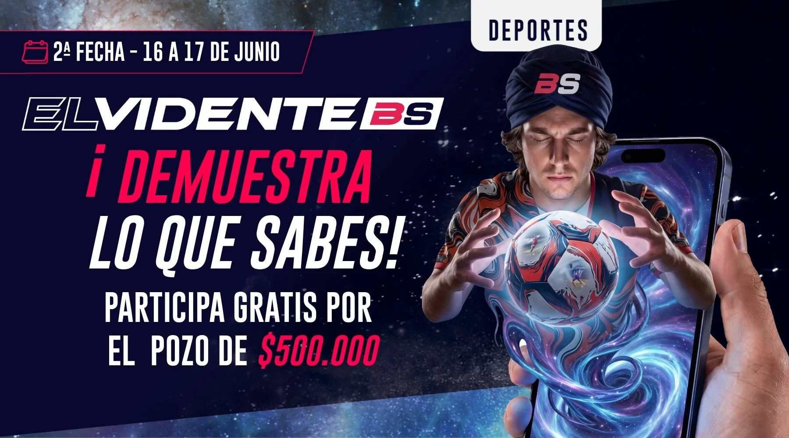
¡Que entre el suplente y siga la jugada! Con Suplente al Rescate, tu apuesta no se queda en la banca: si tu jugador sale, el que entra toma su lugar y sigue jugando por ti. Más emoción, más oportunidades y el gol siempre puede llegar.
¿Cómo funciona?:
Términos y Condiciones:
Condiciones generales de funcionamiento:
Condiciones por mercado:
Condiciones adicionales:
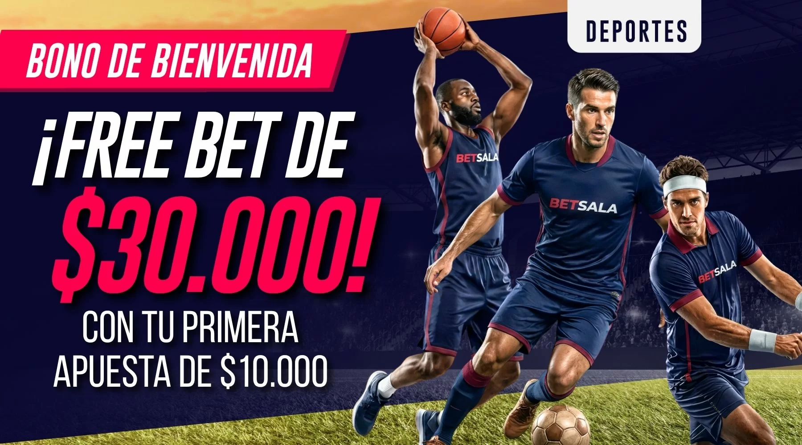
¡El pago anticipado llega a Betsala! ¿Tu equipo va ganando por 2 goles de diferencia? ¡Entonces tu apuesta es ganadora! Ya puedes disfrutar de esta nueva funcionalidad en los partidos de fútbol seleccionados.
Busca el mercado Resultado del Partido (2 goles de ventaja) y haz tu apuesta. Si el equipo que seleccionaste como ganador tiene ventaja de 2 goles en cualquier momento durante el partido, tu apuesta será resuelta como ganadora sin tener que esperar a que termine, aún si el equipo contrario eventualmente anota algún gol o incluso gana el partido. ¡Así podrás disfrutar antes de tus ganancias!
¿Qué más debes saber?
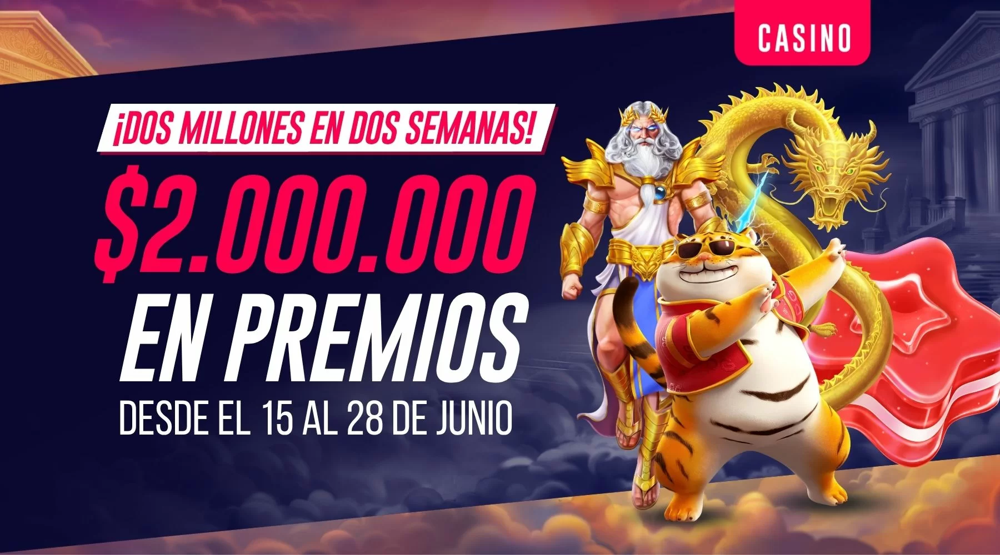
Cada día te puedes llevar un aumentador del 5% en cualquier apuesta deportiva. Al seleccionar la opción en tu boleto de apuestas aumentarás la ganancia neta de tu apuesta un 5%. ¡Todo con saldo real!
¿Cómo consigo mi Aumentador de Ganancias?
Términos y condiciones "Aumentador de Ganancias"
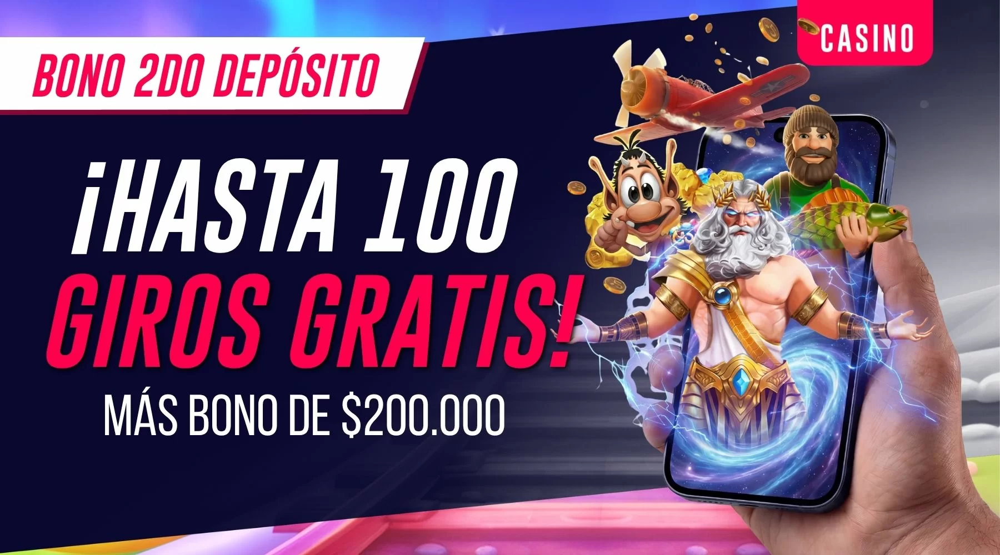
¡Atrévete a ser el estratega de tus propias apuestas con el Bet Builder de Betsala! Esta herramienta revolucionaria te da el poder de personalizar tus apuestas, combinando varios mercados en un solo pronóstico para maximizar tus posibilidades de victoria. Todo esto en los mejores eventos de fútbol, NBA, NHL y ¡mucho más!
Con el Bet Builder, tú eres el arquitecto de tus ganancias. ¿Te imaginas combinar el resultado del partido, el número de goles y quién marcará primero en una sola apuesta? Las cuotas se multiplican, y con ellas, ¡tus posibles ganancias también!
Usarlo es muy fácil. Sólo debes ir al evento deportivo y verificar si la opción Bet Builder está disponible. Si es así, selecciónala y verás una lista de todos los mercados disponibles para que empieces a crear tu apuesta.
No esperes más, ¡el momento de actuar es ahora! Crea tu cuenta en Betsala, aprovecha nuestro bono de bienvenida y empieza a disfrutar del emocionante mundo del Bet Builder. ¡No te quedes atrás, tus amigos ya están ganando con sus pronósticos personalizados! ¡Únete a la diversión y empieza a ganar hoy mismo!
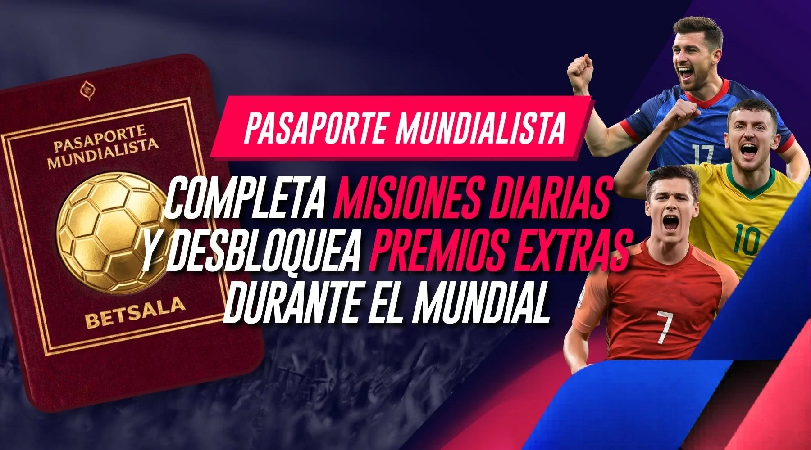
En Betsala entendemos la importancia de que tengas tu dinero lo más rápido posible. Por eso, hemos implementado la opción de Retiro Inmediato, con lo que tu dinero estará en tu cuenta bancaria en menos de cinco minutos los 7 días de la semana.
- Disponibilidad total: Ya sea de día, de noche o durante el fin de semana, la opción de Retiro Inmediato está siempre disponible para ti.
- Fácil y conveniente: Con solo unos pocos clics, podrás retirar tus ganancias directamente a tu cuenta bancaria, sin complicaciones ni demoras.
- Seguro y Confiable: Tu seguridad es nuestra prioridad. Todos los retiros se realizan a través de procesos seguro, cuidando la protección de tus datos y transacciones.
En Betsala, no solo te ofrecemos las mejores experiencias de apuestas deportivas y casino, sino que también nos aseguramos de que disfrutes de tus victorias en tiempo récord.
¡Prueba el Retiro Inmediato hoy y lleva tus ganancias al siguiente nivel!
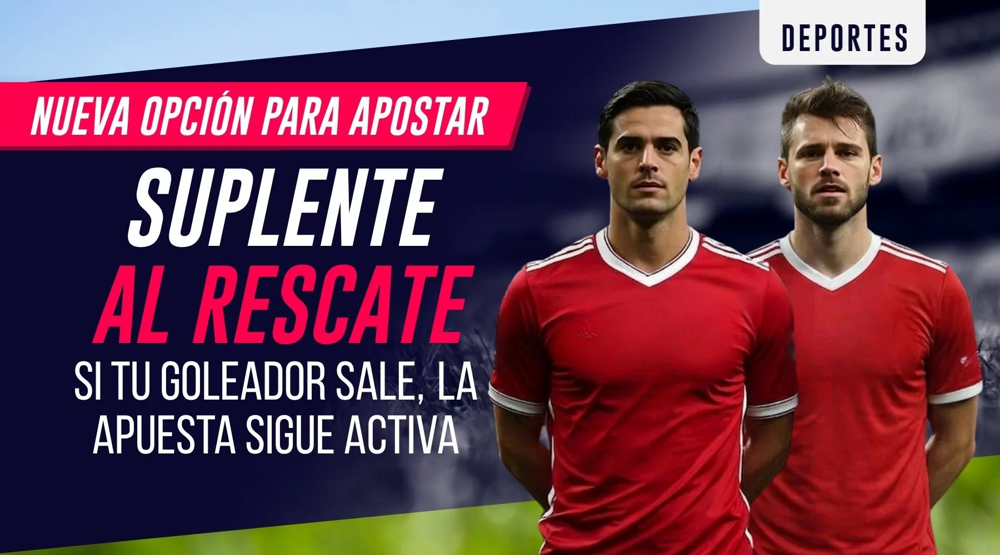
En Betsala, estamos orgullosos de nuestro acuerdo de patrocinio con el Sevilla FC, uno de los clubes más emblemáticos del fútbol europeo. Esta alianza marca un paso importante en nuestra estrategia de crecimiento y consolida el vínculo entre el club andaluz y la apasionada comunidad chilena.
A través de este acuerdo, Betsala y Sevilla buscan impulsar la visibilidad de ambas marcas y acercando al equipo español a nuevos aficionados y demostrando la confiabilidad e importancia de Betsala como casa de apuesta y casino chilena.
Desde Betsala, compartimos los valores que definen al Sevilla FC, por eso, esta colaboración representa mucho más que un acuerdo comercial: es una unión basada en la pasión por el fútbol, el esfuerzo constante y el respeto por la afición y nuestros jugadores.
Estamos convencidos de que este patrocinio será el inicio de una etapa llena de oportunidades, experiencias y emociones que conectarán aún más a Chile con la historia y la grandeza del Sevilla FC.
Más de 25 ofertas activas en BetSala para usuarios de Chile: desde el pack de bienvenida y las misiones mundialistas hasta cashback diario, torneos semanales y el Bet Builder. Abre cada tarjeta para leer condiciones completas.

Abre cualquier tarjeta para ver descripción completa, pasos para activarla y términos y condiciones
Apuesta $10.000 CLP en deportes con cuota mínima 1.80 y recibe $30.000 en apuesta gratis, sin necesidad de ganar.
Código: OMW7
Ver detallesTu primer depósito desde $5.000 CLP se multiplica por 1.5 hasta $300.000, más hasta 200 giros en slots de Pragmatic.
Código: CASINO1DEP
Ver detallesUna misión por día durante el Mundial. Completa 5, 10 o las 17 y gana Free Bets de $5.000, $10.000 y $20.000 CLP.
Código: UNT2
Ver detallesGira Big Bass Football Bonanza desde $300 CLP y cada tirada puede activar aleatoriamente uno de los 100 premios de $22.500 CLP.
Código: ZKM7
Ver detallesEl ranking suma tus mejores multiplicadores diarios desde $150 CLP. Los 20 mejores del clasificador semanal ganan efectivo.
Código: VLC8
Ver detallesMatch del 100% hasta $200.000 CLP en tu segundo depósito, más hasta 100 giros gratis para las tragamonedas seleccionadas.
Código: CASINODEP2
Ver detallesJuega $25.000 CLP en la familia Gates el lunes — ganes o pierdas — y el martes a las 9h aterrizan 25 giros en tu cuenta.
Código: WAGGO2026
Ver detallesPredice marcadores y goleadores del Mundial. Acumula puntos con el multiplicador x2 y compite por el pozo de Free Bets.
Ver detallesElige 1, X o 2 en cada partido desde $300 CLP por línea. Más aciertos significa mayor participación en el pozo de premios.
Ver detallesCada apuesta en más de 20 ruletas de Evolution puede activar un Drop equivalente a 3 veces tu última apuesta en dinero real.
Código: HRE0
Ver detallesEntra a 9 Balls de VoltEnt y cada giro compite por uno de los 6.250 premios, desde 2 EUR hasta 160 EUR convertidos a CLP.
Código: RXM5
Ver detallesEl jueves antes de las 9h recibes el 10% de tu pérdida neta en slots del miércoles, desde $10.000 hasta $1.000.000 CLP.
Código: CAS10%CASH2024
Ver detalles5% de tus pérdidas netas en Casino En Vivo se acumula durante 24h. Cobra cuando quieras o recibe el pago automático a las 5:00h.
Código: CASHLIVE5%
Ver detallesPierde más de $25.000 CLP neto en deportes durante la semana y el lunes recibes Free Bet de $5.000, $10.000 o $25.000 CLP.
Ver detallesAcumula 3 piezas girando slots Pragmatic para canjearlas por premios. Más torneos diarios con ranking en tiempo real.
Ver detallesPulsa Unirse en Aviator o AV1 y vuela desde $200 CLP. El ranking mide el mayor multiplicador; el top 3 reparte $350.000 CLP.
Ver detallesApuesta en slots, desbloquea niveles desde $25.000 CLP y gira la ruleta para ganar efectivo, giros o bonos cada día.
Ver detallesGana una combinada de 3+ selecciones con cuota mínima 1.40 y obtienes bono extra sobre la ganancia neta: del 6% al 100%.
Ver detallesMismo escalado que MásCombi. El bono se acredita junto con las ganancias netas directamente en saldo real sin requisito extra.
Ver detallesTu apuesta al goleador no muere si lo sustituyen: pasa al jugador que entra y sigue activa hasta el final del tiempo reglamentario.
Ver detallesEn el mercado especial de 2 goles: si tu equipo se pone 2 arriba en cualquier momento, tu apuesta se liquida como ganadora al instante.
Ver detallesDeposita $10.000 CLP en una transacción y activa automáticamente un +5% sobre la ganancia neta de tu próxima apuesta deportiva.
Ver detallesActiva Bet Builder en un partido y combina resultado, goleador, corners o tarjetas en un cupón. Las cuotas se multiplican en tiempo real.
Ver detallesTu ganancia llega a la cuenta bancaria en menos de 5 minutos, disponible 24 horas los 365 días del año sin esperas.
Ver detallesBetSala es patrocinador oficial del Sevilla FC, acercando a los aficionados chilenos con uno de los clubes más laureados de Europa.
Ver detallesNo. El bono de bienvenida deportivo y el pack de casino 150% son incompatibles. Debes elegir uno de los dos antes de realizar tu primer depósito.
Sí. Juegas $25.000 CLP el lunes en cualquier slot de la saga Gates of Olympus y el martes a las 9:00h los 25 giros llegan a tu cuenta sin solicitarlo.
El jueves antes de las 9h recibes el 10% de tu pérdida neta en tragamonedas del día anterior, mínimo $1.000 CLP y máximo $100.000 CLP.
Debes activarlo desde el boleto de apuesta. Deposita $10.000 CLP y aparecerá el interruptor del Aumentador del 5% disponible durante ese día natural.